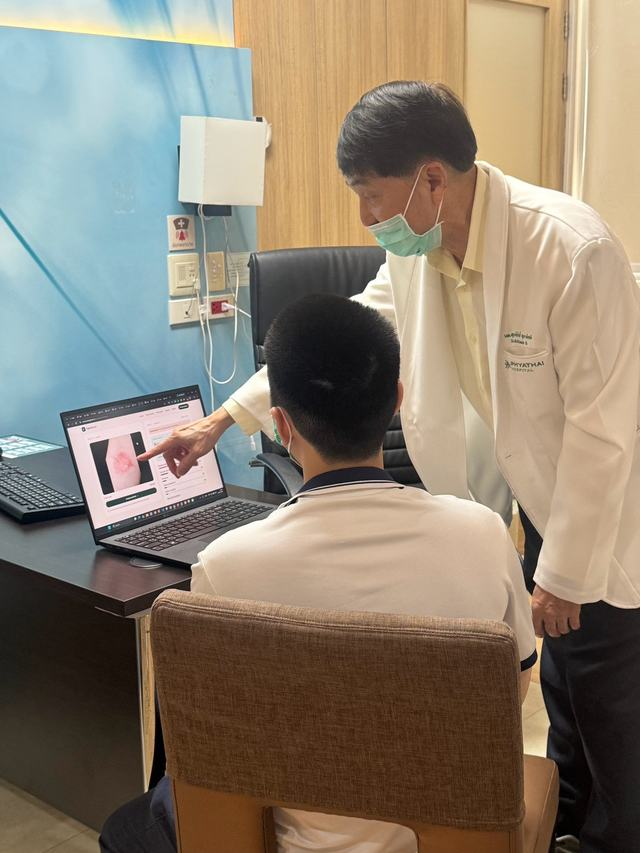
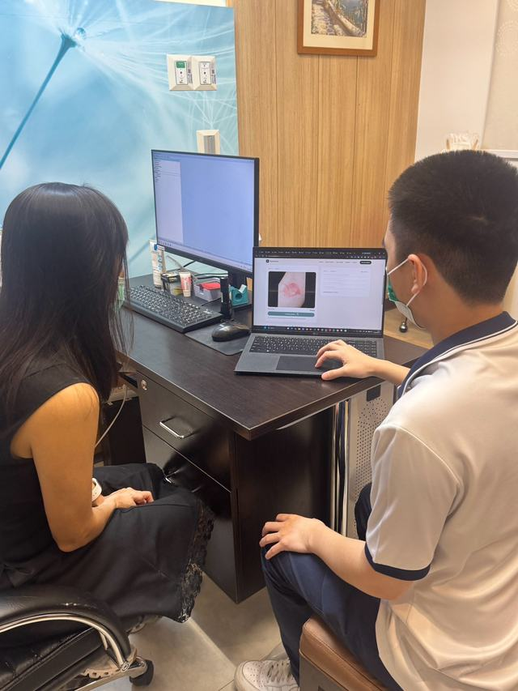
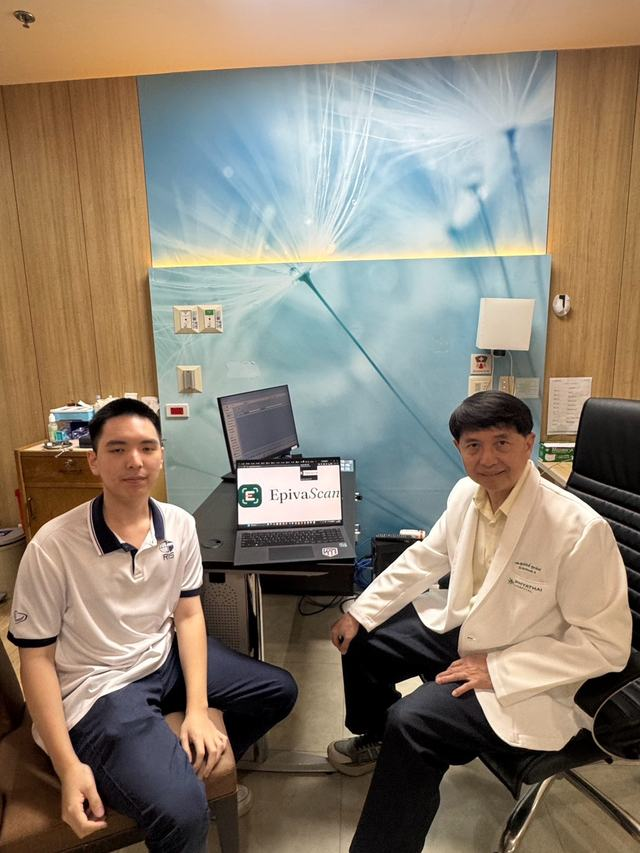

A closer look at skin, from any phone.
EpivaScan reads a photo of a skin concern and shows which conditions it most closely matches, each with a percentage. It’s a clear first step toward the right care.
Skin comes in every tone.
A tool for skin has to work across all of them. These six tones are the scale this site is built around.
Skin disease is everywhere. Skin specialists are not.
1.8billion+
people are living with a skin disease at any given time.
3billion+
people lack proper access to dermatological care.
When the nearest dermatologist is hours or months away, treatable conditions go unrecognised, and small problems become serious ones.
EpivaScan puts a first look in the hands of whoever is already there: a community health worker, a nurse, a parent.
Figures: International League of Dermatological Societies, World Skin Health Day.
Three steps, one photo.
-
1
Take a photo
Photograph the area of concern, or upload a picture you already have.
-
2
Let it scan
The EpivaScan model compares the image with the skin conditions it has learned to recognise.
-
3
Read the matches
See each likely condition with its percentage, ready to share with a health professional.
Shaped with dermatologists in Bangkok.
We take EpivaScan into skin doctors’ clinics and go through its results with them, photo by photo. What they tell us goes into the next version.



One app, two ways in.
EpivaScan is designed for the phone in your pocket, and opens just as easily in a browser on a laptop or desktop.
We’re documenting EpivaScan in the field. Photos, numbers and stories will be published as they come in.
See the impact pageSee the scan flow for yourself.
The web demo walks through the interface end to end. The AI model isn’t connected yet, so it won’t analyse your photo.